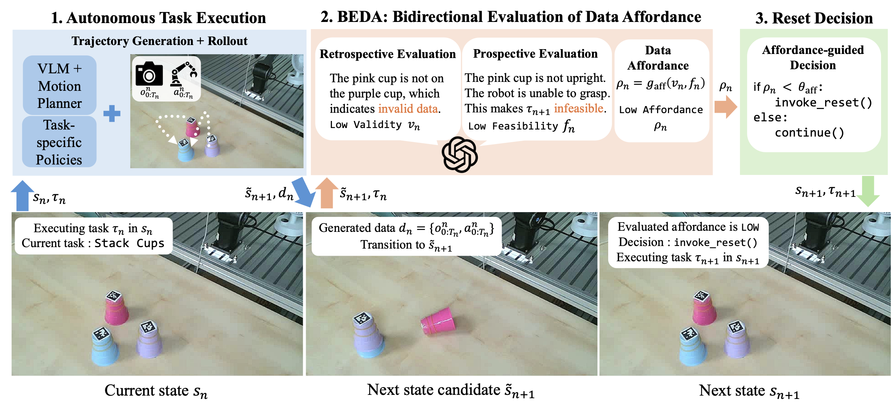
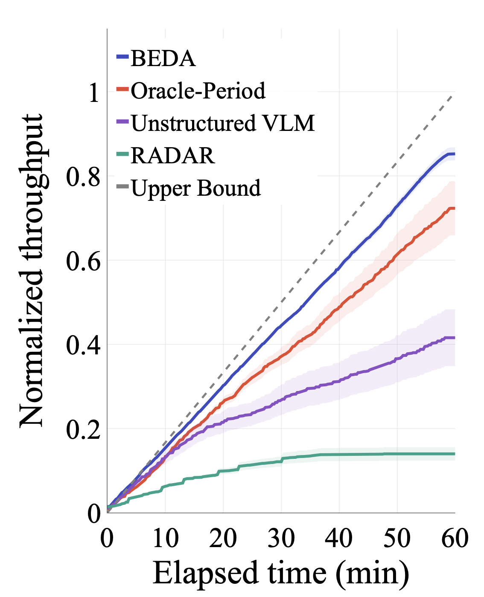
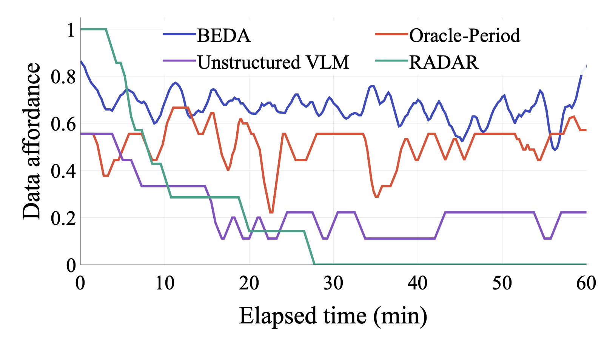
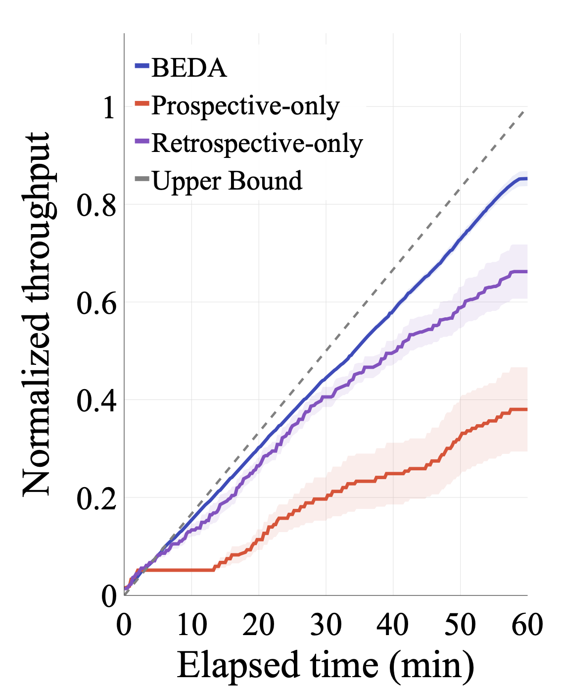
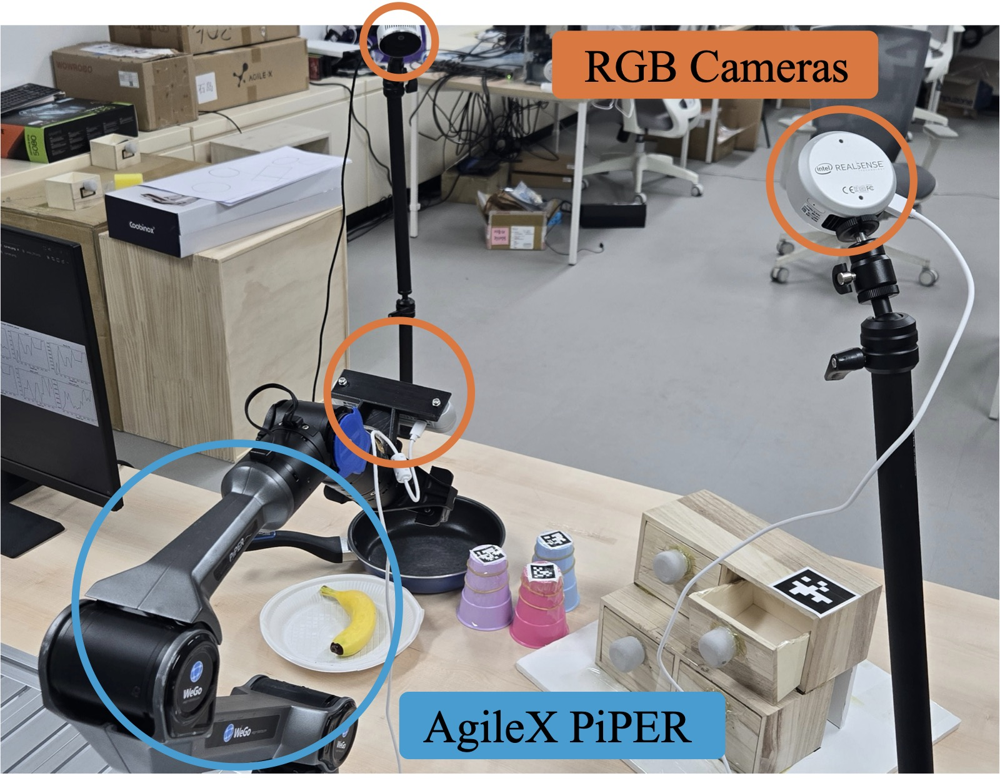

Affordance-guided data collection
Intervene when the scene can no longer support valid interaction — not merely when a task fails.

BEDA — Bidirectional Evaluation of Data Affordance
Large-scale robotic learning increasingly relies on diverse real-world interaction data, yet collecting such data remains difficult to scale. Although autonomous collection systems reduce the need for continuous low-level teleoperation, inherent failures and environment degradation still require human intervention when continued execution becomes infeasible. This shifts the bottleneck from controlling the robot to deciding when the environment requires a manual reset. We propose an affordance-guided robotic data collection system that maintains productive scene states by using data affordance: whether the current scene can support the continued collection of a valid interaction dataset. At its core, BEDA (Bidirectional Evaluation of Data Affordance) decomposes scene diagnosis into retrospective evaluation of trajectory validity and prospective evaluation of next-task feasibility. A task-agnostic diagnosis protocol is instantiated with task descriptions to generate task-specific checklists, enabling structured VLM-based evaluation of whether collection should continue or request intervention. Across 15 real-world tabletop tasks, our affordance-guided collection system reaches 84.3% of the throughput upper bound. Scaled multi-robot simulations further show increased operator capacity, with a single operator maintaining 91% of ideal throughput across fleets of up to 128 robots. BEDA's intervention decisions closely align with human oracle labels, and ablations confirm that both retrospective and prospective evaluations are necessary. These results establish affordance-guided intervention as a practical mechanism for scalable long-horizon robotic data collection.
Intervene when the scene can no longer support valid interaction — not merely when a task fails.
Bidirectional evaluation turns open-ended failure judgment into two structured checks.

Looks backward at the episode that just finished: was the collected trajectory a valid piece of interaction data? A nominally successful rollout can still be invalid, and a failed grasp can still leave usable data behind.
Looks forward at the resulting scene: can the next task still be executed from here? Displaced objects, fallen items, or a jammed drawer make continued collection infeasible even after a success.
Compared against periodic reset, unstructured VLM judgment, and a no-intervention baseline.
| Intervention strategy | Data throughput ↑ (/hr) | Execution success ↑ (%) | Data affordance ↑ | Intervention freq. (/hr) |
|---|---|---|---|---|
| RADAR | 0.194 ±0.05 | 21.9 ±6.16 | 0.227 ±0.03 | – |
| Unstructured VLM | 0.544 ±0.14 | 48.0 ±10.94 | 0.492 ±0.09 | 1.23 ±1.12 |
| Oracle-Period | 0.737 ±0.12 | 64.2 ±4.82 | 0.798 ±0.09 | 10.25 ±1.44 |
| BEDA (ours) | 0.855 ±0.04 | 79.2 ±5.47 | 0.843 ±0.06 | 9.12 ±2.63 |




One operator, fleets of up to 128 robots.
Reversible task pairs let collection continue without a human in the loop.
